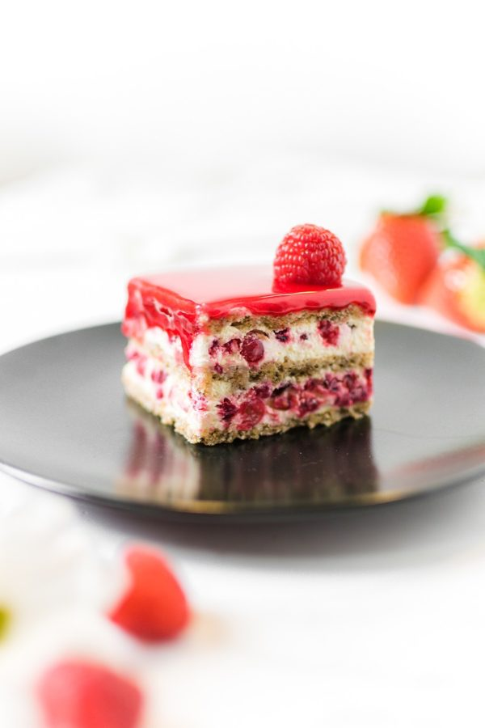
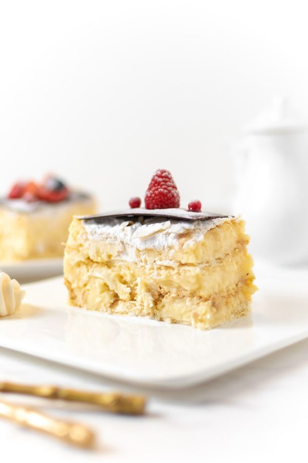
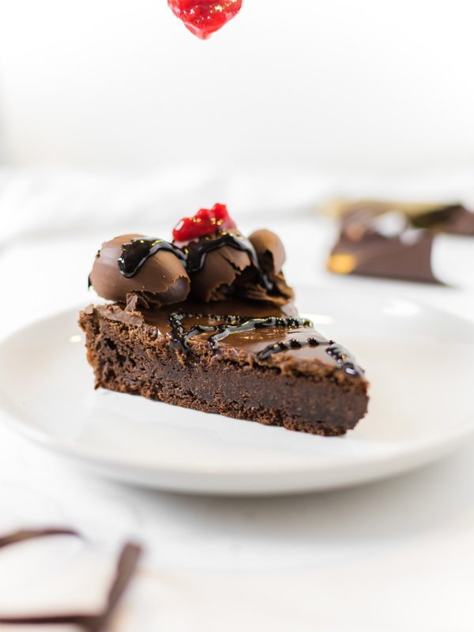

Voćna, kremasta torta. Kore su od oraha. Fil se sastoji od divne kombinacije krema od žumanaca kuvanog na pari i ribizli i malina,
koje doprinose osvežavajućem ukusu torte. Originalni recept Poslastičarnice Aleksandar

Jedna od starih i širom sveta omiljenih poslastica. Iako sa malim varijacijama uvek sličnog ukusa. Francuzi je zovu Hilhadu listova.
Obilje tradicionalno kuvanog žutog krema sa mirisom vanile, izmedju hrskavih korica, učiniće da vaš užitak bude nezaboravan.

Bezglutenski čokoladni tart sastoji se od čokolade, crnog kakaa, putera i jaja. Uz njega sleduje i domaći berry sos,
kuvan od crvenog bobičastog voća. Preporuka je da se tart zagreje 20 sekundi u mikrotalasnoj pećnici, prelije berry sosom i,
po želji, služi sa kuglom sladoleda od vanile. Originalni recept Mammas Biscuit House brenda.